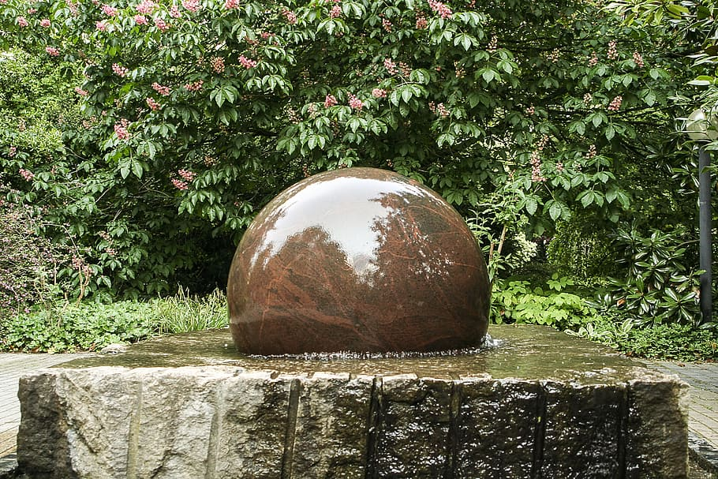
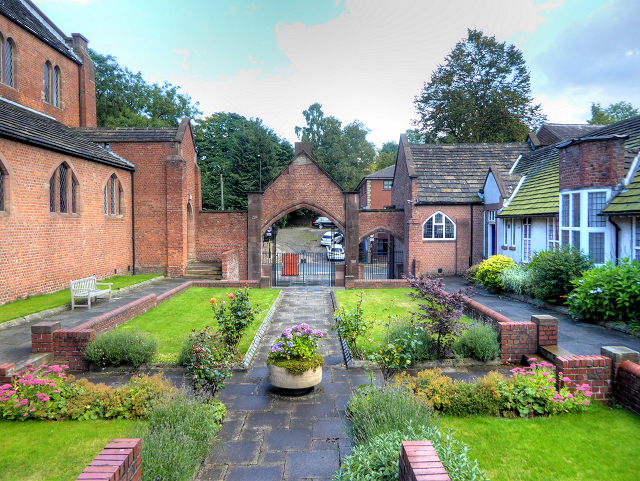

"Pansy amazed me with her designs"
We asked Pansy to come and have a look at our new property in Herefordshire as the garden had been neglected. She came to discuss our requirements and provided a very competitive quote and produce the most beautiful garden I could have dreamed of. We love to sit out and watch the water bubble over stone sphere.
- Mr and Mrs Ward

Complete garden makeover!
Pansy was recommended to me by a colleague. I had been let down by a few companies, so it was refreshing to encounter such a professional and knowledgeable landscaper. Pansy not only knew the materials and how to make them sparkle in our space, but also knew exactly which plants to use to accentuate the divine patios and stairs that she built for us.
- Rodney & Simon
Sensitive approach to design and planting
Pansy has designed and planted two gardens for me. One a courtyard garden and the other a little larger with flower beds and a curvy lawn. She made each experience such fun and her sensitive approach to the designs and planting were tailored to my lifestyle. I have been so delighted with both my gardens. They are a joy!
- Mrs Wishart
